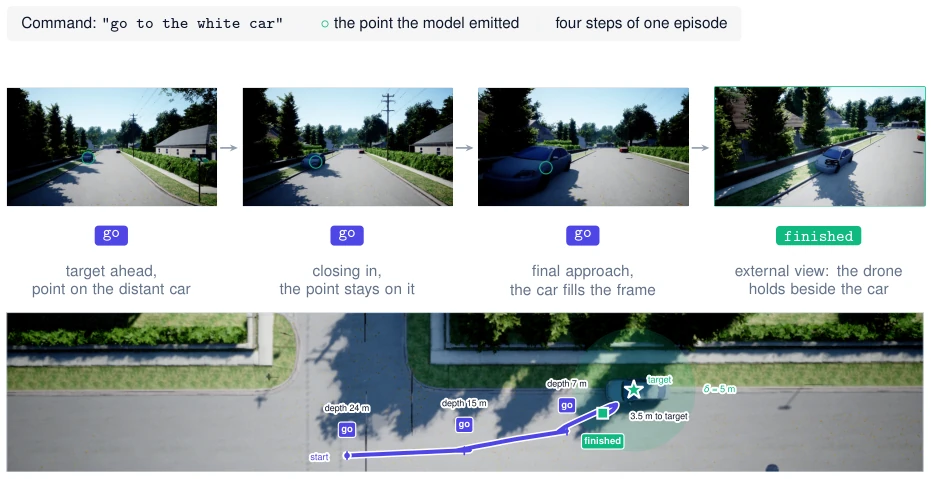
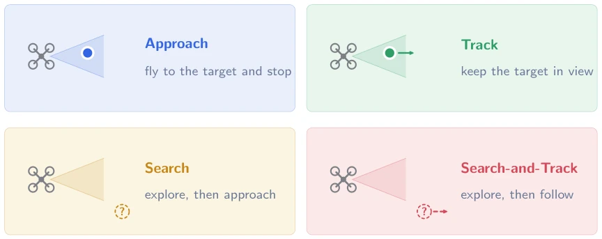
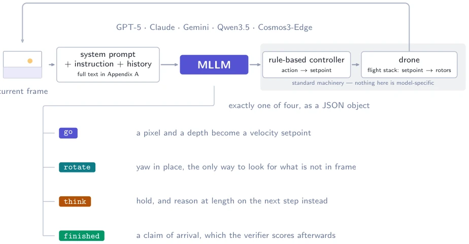
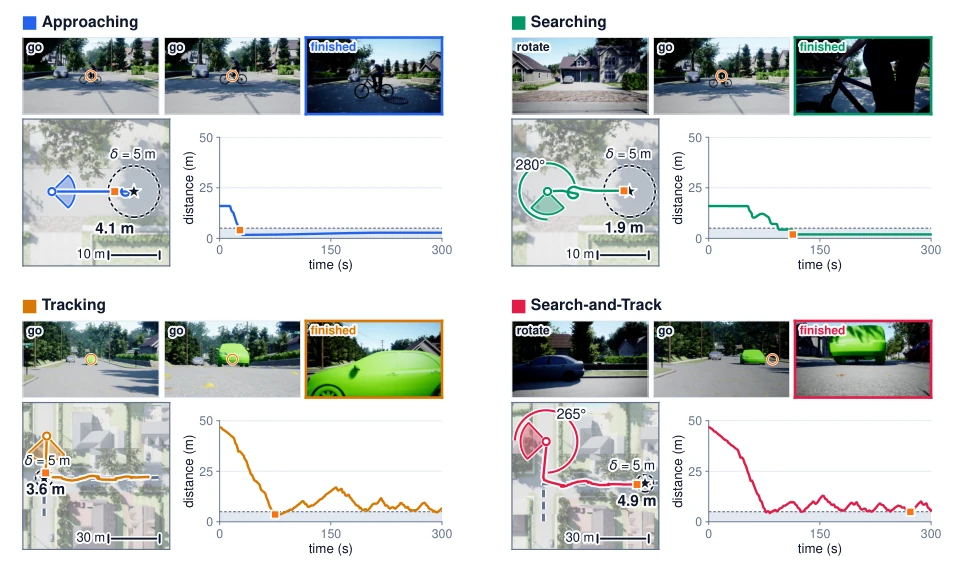
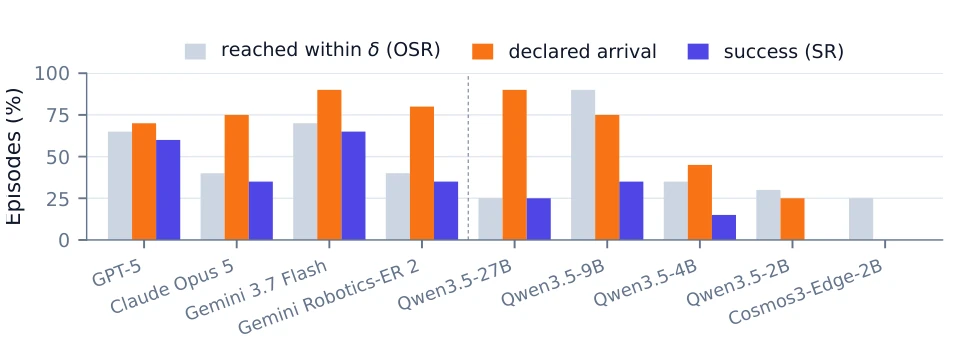
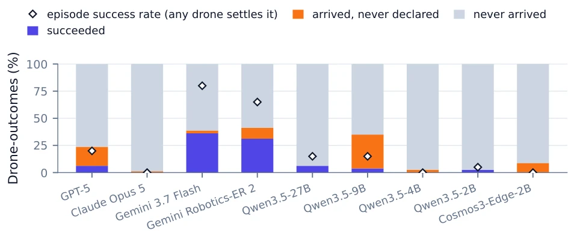
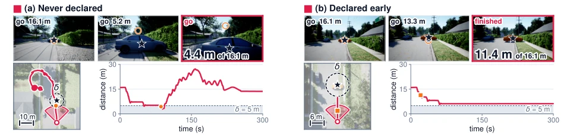
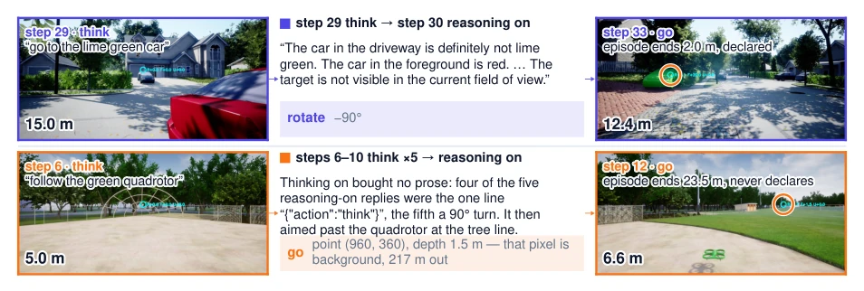
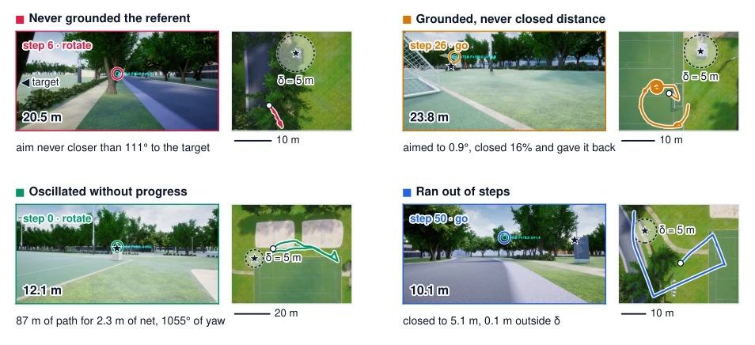
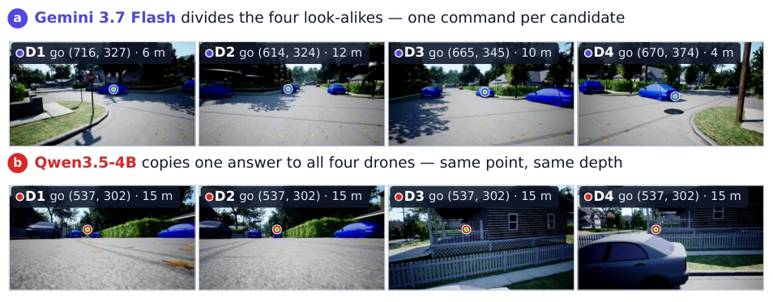

This paper casts a sobering light on embodied control for MLLMs. The DroneCATS architecture is quite elegant, throwing the entire action space into the prompt, requiring no fine-tuning; while seemingly general, it actually exposes the awkwardness of the model's "knowing-doing gap". Small models fly accurately but cannot stop; large models understand the rules but fly inaccurately. Multi-drone formation is even more of a litmus test; small models directly copy-paste coordinates, amounting to a "collective crash". Although the benchmark design unifies success criteria, the core problem remains unsolved: does the model actually know when the task ends? This falls short of true autonomous flight by the concept of "self-discipline". Existing systems often hand termination rights to external thresholds, masking the shortcomings of model decision-making capabilities. This paper reveals this truth through DroneCATS, serving both as a test of MLLM capabilities and an honest report on the difficulties of embodied AI implementation.
研究动机Motivation
现有工作如 TypeFly (Chen et al., 2025) 和 Fly0 (Xu et al., 2026) 虽验证了 MLLM 闭环，但大多剥离了模型的决策权，比如用外部探测器或距离阈值判定终止。这导致无法评估模型真正的具身能力。DroneCATS 旨在将模型作为独立变量，测试其在无需微调下处理搜索、跟踪、编队指挥的能力。现有基准如 BEDI (Guo et al., 2026) 多依赖人工评分或选择题，缺乏统一闭环标准。本文试图填补这一空白，揭示模型在空间感知与动作协议间的鸿沟。特别是多机指挥场景，现有工作几乎空白，无法评估模型在复杂上下文中的指代消歧能力，这是具身智能从单智能体迈向多智能体的关键一步。
Existing works such as TypeFly (Chen et al., 2025) and Fly0 (Xu et al., 2026) have verified MLLM closed-loops, but most have stripped away the model's decision-making rights, for example using external detectors or distance thresholds to determine termination. This leads to an inability to evaluate the model's true embodied capabilities. DroneCATS aims to treat the model as an independent variable, testing its ability to handle search, tracking, and formation command without fine-tuning. Existing benchmarks such as BEDI (Guo et al., 2026) mostly rely on human scoring or multiple-choice questions, lacking unified closed-loop standards. This paper attempts to fill this gap, revealing the chasm between spatial perception and action protocols in models. Particularly in multi-drone command scenarios, existing work is nearly blank, unable to evaluate the model's referential disambiguation capabilities in complex contexts, which is a key step for embodied intelligence moving from single-agent to multi-agent.

Figure 1 Approaching episode example. The model is given the instruction and the egocentric frame and returns one action per step; the circle marks the point it emitted, which stays on the target as the target grows in view, and the fourth panel is an external view of the drone holding position after it declared arrival. The band below is the same flight from above, with the δ ring on the target and the declaration marked, so the strip and the criterion can be read against each other.

Figure 3 The DroneCATS task axis. Target motion and initial visibility combine into four task types. In each pictogram the wedge is the drone’s field of view, the filled dot is a target inside it, the dashed circle outside the wedge is a target whose location is unknown, and the arrow marks a moving target.
方法Method
核心是 DroneCATS-Agent 架构。数据流上，模型接收单目 RGB 帧与指令，输出 JSON 动作（go, rotate, think, finished），无微调。控制器将像素与深度估计转为 3D 位移设定点，底层飞控执行闭环。创新点在于动作空间完全由 Prompt 定义，终止动作（finished）由模型自声明，而非外部距离阈值。Benchmark 覆盖单/多机场景，任务轴包括目标可见性、运动状态，统一成功标准（声明时距离<5m 且可见）。多机模式下，模型需同时处理 N 个视角并分配指令，考验指代消歧能力。这种设计确保了模型是唯一变量，排除了微调或函数调用带来的干扰，能更纯粹地评估 MLLM 的泛化控制能力。
The core is the DroneCATS-Agent architecture. In terms of data flow, the model receives monocular RGB frames and instructions, outputting JSON actions (go, rotate, think, finished), without fine-tuning. The controller converts pixels and depth estimation into 3D displacement setpoints, with the low-level flight controller executing the closed-loop. The innovation lies in the action space being entirely defined by the Prompt, with the termination action (finished) self-declared by the model, rather than by external distance thresholds. The benchmark covers single/multi-drone scenarios, task axes include target visibility and motion state, with unified success criteria (distance < 5m and visible upon declaration). In multi-drone mode, the model must handle N views simultaneously and assign commands, testing referential disambiguation capabilities. This design ensures the model is the only variable, excluding interference from fine-tuning or function calls, enabling a purer evaluation of MLLM's generalization control capabilities.

Figure 2 The DroneCATS-Agent loop. The action space exists only in the prompt, so a model plugs in with no fine- tuning and no function-calling schema, and swapping it changes nothing else. Beyond pointing, the model decides when to look around, when to spend more computation, and when it is done. Below the chosen action, a rule-based controller translates it into a setpoint — geometry solved once per step — and the flight stack’s cascade tracks that setpoint continuously, so nothing between the JSON object and the rotors is model-specific (Section 3.2).

Figure 4 One successful episode per task type, same map and same model throughout, so only the scene differs. Three egocentric frames, cropped toward the point the model emitted, sit over a top-down trace on an aerial photograph of the ground flown. The wedge is the camera’s field of view in the first frame, so the target sits inside it on the two panels whose task starts with it visible and outside it on the two that do not; its radius is a symbol, not a distance. Where the model turned before setting off, a thin arc carries how far. The two rows run at 28.7 and 86 m across, so each panel carries a scale bar, and the δ = 5 m ring is at true scale throughout.
Tested 9 models in AirSim simulation, totaling 100 episodes. Metrics include Success Rate (SR) and Trajectory Entry Radius Rate (OSR). Found that small models (e.g., Qwen3.5-2B) have high OSR but very low SR, often declaring too early or never declaring; large models (e.g., Gemini 3.7 Flash) have high SR but slightly lower OSR. In multi-drone formation tasks, small models tend to copy coordinates leading to failure, while large models perform robustly. Ablation shows the declaration protocol is the bottleneck, not navigation capability. This indicates current MLLMs meet standards in spatial perception but still lack discipline in action protocols, especially in judging termination conditions, which is a key challenge for deployment to edge devices.

Figure 7 Approaching, decomposed. Reaching within δ, declaring arrival, and succeeding, over the 20 episodes of that cell, so every bar is a multiple of 5 points. Frontier models lose episodes because they do not arrive; the small open models decouple the three quantities in both directions.

Figure 8 Commanding, decomposed over drone-outcomes rather than episodes: the three categories of Figure 7, over the eighty drone-outcomes of each model (twenty episodes × four drones). Diamonds mark the episode success rate, which the stacked bar cannot express, since one drone’s qualifying declaration settles the episode: Gemini 3.7 Flash wins 80% of episodes out of 36% of drone-outcomes.
其他图片Other Figures

Figure 5 The two ways a declaration goes wrong, one episode each, both on nh and both starting 16.1 m out. (a) Qwen3.5-2B is 4.4 m out and inside δ at step 7, emits go, and never declares in 34 steps. (b) Gemini Robotics-ER 2 declares at step 3 of 87, 11.4 m out with the car dead centre, and never enters δ at all: what fails is the arrival test, not perception. Each strip ends on the marked frame, and the two windows differ, so each trace carries its own scale bar.

Figure 9 One think step in two episodes. Left, the frame that triggered it; centre, what the next, thinking-on step returned, quoted from the log; right, a later frame with the model’s emitted point and where the episode ended. Above, a think that helped — Qwen3.5-9B, the roster’s best case, not a typical one: lost and drifting out to 15 m, the model reads the scene correctly, turns round, re-acquires the car and reaches 2.0 m. Below, five spent in a row and wasted — Qwen3.5-4B, 5.0 m from the quadrotor it was told to follow: four of the five thinking-on replies are the one line {"action":"think"}, the fifth a 90◦turn, after which it aims past the target at the tree line (6.6 m ahead; the chosen pixel is background at 217 m) and never declares.

Figure 10 The other four failure modes, one episode each and one model each, so that what the panels contrast is the modes rather than one bad model — left to right, top to bottom: GPT-5, Qwen3.5-2B, Gemini Robotics-ER 2, Qwen3.5-9B.

Figure 11 One step of the commanding setting. Each row shows the four views exactly as the model received them, with the emitted go points ringed. (a) Division of labour (Gemini 3.7 Flash, successful episode): the four points land on four different look-alikes, so one response splits the candidates. (b) Coordinate copying (Qwen3.5-4B, failed episode): one response gives every drone the same pixel and the same depth. The views share nothing — the point is a distant car in one view and a house wall in another — so at most one of the four commands can be grounded. Copying at this exactness is how the small open models command: Qwen3.5-9B emits an identical point for all four drones in 70% of its all-go steps and 27B in 58%, while the frontier models sit at 0–1%. Both rows are mid-episode step